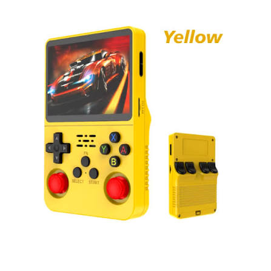

Lanzamiento de la nueva generación de consolas portátiles
14 de Septiembre, 2026El mercado de los videojuegos portátiles da un salto gigante con la llegada de nuevos procesadores gráficos que prometen correr títulos AAA con trazado de rayos y una autonomía de batería sin precedentes.